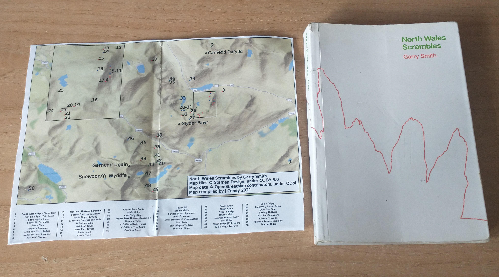

North Wales Scrambles Map
North Wales Scrambles Map
The guidebook to 50 scrambles in North Wales by Garry Smith (ISBN 978-0-9929692-0-2.) lacks an overview map showing the location of all the scrambles contained within the guide.
I've had a go at making a pdf pull-out-and-keep map that should fit within a copy of the guidebook, when folded in half.
Don't scale the pdf to your printer paper otherwise it won't fit.
Let me know what you think.
Download Map as a PDF (708 KB)
